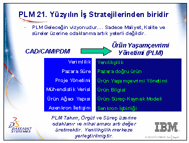
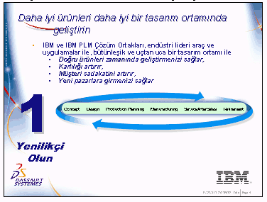
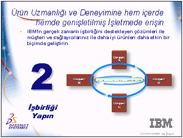
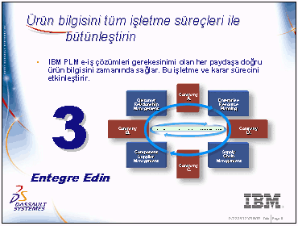
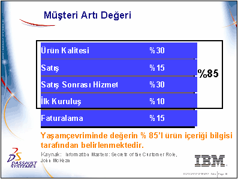

|
Süleyman
Müftüoðlu, IBM Türk Ltd. Þti. Ocak 2003
MUFTUOG@tr.ibm.com
PLM
(Product Lifecycle Management - Ürün Yaþamçevrimi Yönetimi)
kavramý 2000 senesinde ilk kez IBM tarafýndan ortaya atýldý.
O zamandan beri hem IBM, hem kavramý kabul eden diðer satýcý
firmalar (EDS, PTC ve son olarak Autodesk), hem de imalat
uygulamalarý pazarýnda faaliyet gösteren danýþmanlýk þirketleri
tarafýndan geliþtirilmeye devam edildi. Þu anda kabul görmüþ
bir iþ stratejisi ve vizyonu olduðunu düþünüyoruz. Geleceðin
yani önümüzdeki yüzyýlýn vizyonu.
PLM'in
en önemli çýkýþ noktasý geleneksel maliyet/kalite ve temin
süresi üçgeninin ötesinde yeni kavramlarý ortaya sürmesidir.
Bilindiði gibi bu üçlü geleneksel olarak en temel rekabet
unsurlarý olarak görülmüþtür. PLM çýkýþýnýn ana amacý Þirketleri
geleneksel rekabet etme biçimlerinin ötesinde rekabetçi kýlacak
diðer unsurlara dikkatleri çekebilmektir. Bu anlamda PLM yeni
bir yaklaþým biçimini temsil etmektedir.
Þimdi
bu farklý yaklaþým biçimini irdelemeye baþlayalým. Geçmiþte
kullanageldiðimiz CAD/CAM/PDM (Computer Aided Design/Computer
Aided Manufacturing/Product Data Management - Bilgisayar Destekli
Tasarým/Bilgisayar Destekli Ýmalat/Ürün Veri Yönetimi) paradigmasýnýn
ötesinde yeni paradigmanýn ne gibi farklarý vardýr.
CAD/CAM/PDM
yaklaþýmý verimlilik üzerine odaklanmaktadýr. Bir tasarým
uygulamasýný kullanýrken kiþilerin verimliliði ve/veya takýmlarýn
verimliliði üzerinde durmakta ve kullanýlan araçlar bu amacý
gerçekleþtirme derecelerine göre deðerlendirilmektedir. Burada
sýk düþülen tehlike, süreç verimliliði üzerine odaklanmak
yerine iþ verimliliði üzerine fazlaca eðilmek ve ürünleri
sadece iþlevsel bazda deðerlendirmektir. PLM'in buradaki farký
sadece verimlilik deðil ek olarak 'yenilikçilik' (Innovation)
kavramý üzerine odaklanmasýdýr. Gerçekten de geliþen rekabet
dünyasýnda baþarýlý olmak isteyen her þirket daha fazla ve
daha yeni ürünü daha sýk aralýklarla çýkarmak durumundadýr.
Diyebilirizki PLM yaklaþýmýnýn en önemli kavramý yenilikçilik
kavramýdýr.
PLM
kavramý benzer þekilde tasarým ve mühendislik sürecinin temel
metriðinide sorgulamaktadýr. Artýk ürün pazara sürülünceye
kadar geçen zaman olan 'pazara zaman' (time to market)ölçüsü
yerine 'Pazara doðru zaman, doðru ürün' (right to market)
yaklaþýmý kullanýlmaktadýr. Ürünü tasarladýnýz ama imaledilebilir
deðil, ürün zamanýnda çýktý ancak müþteri tarafýndan kabul
edilebilir bir maliyet yapýsýnda deðil, çok kaliteli ama servis
verilememekte vb.. Bu yaklaþýmýn iþletmelere katkýsý süreçleri
bütünleþtirme ve eþ zamanlý mühendislik motivasyonunu artýrmasý
elbette.
PLM
Proje Yönetimi kavramýnýda Ürün Yaþamçevrimi Yönetimine dönüþtürmeyi
teklif etmektedir. Buradaki en önemli fark ürün (geliþtirme)
projelerinin kapsama alanýnýn geniþletilmiþ olmasý. Müþteriden
alýnan geribildirimlerin yeni bir ürün için, daha geliþtirme
projesi baþlamadan kavramlaþtýrýlmasý, geliþtirme projesi
bitip ürün ticari hale geldikten sonra satýþ sonrasý hizmetler
sürecinin ürün/geliþtirme bilgileri ile bütünleþtirilmesi
yeni ve olumlu yaklaþýmlar.
PLM
geleneksel mühendislik verisi kavramýný da zenginleþtirmeye
yönelmiþ durumda. Teknik resim, katý model, yüzey gibi temel
geometrik 'veri'ler öncelikle bir iliþkisel veri temeli içine
tanýmlanýyor; süreç kýsýtlarý, iþletme tasarým kurallarý ile
bütünleþtirilerek zenginleþtiriliyor; kullanýlabilir 'bilgi'
haline getiriliyor. Bu zengin ortamýn yenilikçiliði artýracaðýný
rahatlýkla söyleyebiliriz
PLM
yaklaþýmýnýn yenilikçi yönlerinden biride sadece ürün yapýsý
ile deðil, buna ilave olarak süreç ve kaynak bileþenleri ile
ilgilenmesi ve tüm bileþenleri bir ürün-süreç-kaynak modeli
(Product-Process-Resource Model) ile bütünleþtirmeye çalýþmasýdýr.
PLM
e-iþ (e-business) teknolojik altyapýsýný kullanarak,
paydaþlar arasýndaki iletiþimin ikiyönlü ve eþzamanlý olmasýný
hedefleyen bir yaklaþým içindedir.
Peki
PLM bizden ne yapmamýzý istiyor?
PLM'in
Þirketlere 'üç emir' tavsiye etmekte:
Bir:
Yenilikçi olun (Innovate); daha fazla ve daha yeni
ürünün geliþtirilebilmesi için ön koþul olan daha etkin bir
tasarým ortamý oluþturun.
Ýki:
Ýþbirliði yapýn (collaborate); PLM Çözümlerini kullanarak
Þirket içindeki veya geniþletilmiþ iþletmenizdeki (þirket,
satýcý ve saðlayýcýlarýndan oluþan zincire geniþletilmiþ iþletme
(extended enterprise) diyoruz) tüm beceri ve birikime eriþin.
Üç:
Bütünleþtirin (integrate); Oluþturulan içeriði diðer
süreçleri de hýzlandýracak þekilde paylaþýn ve gücünüzü artýracak
þekilde kullanýn.
PLM
Çözüm Saðlayýcýsý olarak IBM yukarýdaki isteklerin erkleyicisi
olarak PLM Çözümlerini merkeze yerleþtirmektedir.
Üç
stratejik emrin üzerinden kýsaca geçelim:
Yenilikçilik
doðru ürünleri pazara zamanýnda sürmenizi temin eder. Ürün
boru hattýnýzýn debisini artýrýr. Yani doðrudan doðruya firmanýn
iþ neticelerini yani geliri ve karlýlýðý olumlu bir þekilde
etkiler. Müþteri gereksinimleri zamanýnda ve etkin bir biçimde
karþýlandýðý için müþteri sadakati artar ve firmanýn geleceði
teminat altýna alýnýr.
Yenilikçi
olursanýz yepyeni ürünleri geliþtirme þansýnýz olur. Rekabet
günüz artar. Ýstatistikler pazara ilk giren 2 ürünün toplam
pazar payýnýn % 80 civarýnda olduðunu söylemekte. Özellikle
yepyeni bir ürün çýkarmak rakiplerle aradaki farký 3-4 yýla
kadar çýkarmakta; eðer ayný/benzer ürünler bazýnda zaman olarak
daha önceyseniz bu daha rahatlýkla telafi edilebilecek bir
rekabet farký yaratmaktadýr.
PLM
bu noktada þirketlerin akýl sermayeleri (Intellectual
Property) üzerine odaklanmalarýna fýrsat vermektedir. Elle
tutulur bir þey olmamakla beraber uzmanlara göre Akýl Sermayesi
en önemli rekabet unsurlarýndan biridir. PLM'in amacý akýl
sermayesini yönetmek ve geliþtirmektir.
Ýþbirliði
artýk tüm þirketler için bir olmazsa olmaz koþul haline gelmiþtir.
Maliyet baskýsý tüm tasarým ve imalat iþlemlerini küresel
hale getirmiþtir. Ana þirketlerde dýþarýdan hizmet ve mal
tedariki artan bir eðilimdir ve artan ürün çeþitliliði ve
kýsalan ürün yaþamçevrimleri karþýsýnda yapacak fazla bir
þey de yoktur.

PLM
Çözümleri içinde yeralan muhtelif iþbirliði araçlarý ile paydaþlar
daha etkin bir biçimde çalýþýp, geniþletilmiþ iþletme içindeki
tüm becerileri kullanabilirler.
Doðal olarak bir iþletme PLM Çözümleri yanýsýra baþka uygulamalarýda
baþka amaçlarla kullanmaktadýr. Bunlara kýsaca bir gözden
geçirip PLM Çözümlerini bu anlamda konumlandýrmaya çalýþalým.
CRM
(Customer Relationship Management-Müþteri Ýliþkileri Yönetimi)
uygulamalarý müþterilerle ilgilenir; amaç müþteri memnuniyetini
artýrmak; müþterileri deðiþik bölümlere ayýrarak hem firmanýn
müþteri hizmeti için kaynaklarýný etkin kullanmak hem de gelir
ve karlýlýðý artýrmaktýr.
ERP
(Enterprise Resource Planning - Kurumsal Kaynak Planlama)
yazýlýmlarý bir iþletmenin tüm maddi ve insani kaynaklarýnýn
taktik ve operasyonel olarak planlanmasýný saðlamaktadýr.
ERP yazýlýmlarýnýn temel amacý iþletmenin iþletme sermayesini
(nakitte, hammadde/yarýmamul/mamul stoklarýnda veya alacaklarda
olabilir) optimize etmek yani minimum sermaye ile maksimum
iþletme seviyesini yakalayabilmektir.
Tedarik
Zinciri Yönetimi (Supply Chain Management) Uygulamalarý
ise müþteri-Ýmalatçý ve Yan sanayilerden oluþan zincirin toplam
verimliliðini artýrmaya yönelik yazýlýmlardan oluþmaktadýr.
PLM
Çözümleri ile bu uygulamalar bütünleþtirilebilmelidir. Örneði
CRM uygulamasýndan gelen geri bildirimler tasarým sürecine
aktarýlabilmelidir. Eðer konfigüre edilebilen bir ürün çýkardýysanýz,
PLM Çözümleri müþterilerin kendi sipariþlerini konfigüre edebilmeleri
için kullanýlabilmelidir.
PLM
Çözümleri ile tasarým aþamasýnda oluþan ürün yapýsý, ERP uygulamalarýnýn
anaçatýsýný oluþturan Malzeme Gereksinim Planlama (Material
Requirments Planning) sistemlerine aktarýlabilmelidir. Yapýlan
mühendislik deðiþiklikleri lojistik sistemlerle konuþabilmelidir.
PLM
Çözümlerinin diðer ana uygulamalardan en önemli ayýrdedici
özelliði nedir? PLM Çözümleri daha önce bahsedildiði gibi
buluþ yapabilen aklý, yani insan sermayesinin çýktýsýný maksimize
etmeyi hedeflemektedir (yenilikçilik). Dolayýsýyla elde edilebilecek
kazanýmlarýn sýnýrý yoktur ve rekabet stratejisi açýsýndan
taklit edilemez veya zor taklit edilir niteliktedir. Maliyetleri
minimize etmeye çalýþan uygulama setleri ise sýnýrlý ve kolayca
taklit edilebilen taktik kazanýmlar saðlayabilmektedir (maliyetleri,
stok seviyesini en fazla sýfýra kadar indirebilirsiniz!).
Uygulamalarýn
bütünleþtirilmesinde IBM'in stratejisi e-iþ altyapýsýný etkin
bir biçimde kullanmaktýr. Ayrýca Çözümlerimizin çoðunda, yaygýn
olarak kullanýlan komþu uygulamalar ile doðrudan bütünleþtirme
saðlanmýþ durumdadýr. Çözümlerimizin iliþkisel ve nesne tabanlý
yapýsý bütünleþtirmeyi kolaylaþtýrmaktadýr.
Þimdiye
kadar incelediklerimizi bir tanýmla toparlamaya çalýþýrsak
nasýl bir tanýmla karþýlaþýrýz?
-
Neden PLM?: Ýþletmenin iþ kararlarýný ürün ve ürün yelpazesi
ile ilgili tam bilgi ile verebilmek. Yani diyoruz ki PLM yaklaþýmý
bir iþ uygulamalarý setini tanýmlar ve özellikle bu yaklaþýmý
ile bu uygulamalardan CAD/CAM/CAE uygulamalarýný bir departman
çözümü olmaktan çýkarmaktadýr,
-
Ürün içeriðinin geliþtirilmesi ve tüm süreçlerle bütünleþtirilmesini
saðlar ve bunu sadece iþletme içinde deðil tüm geniþletilmiþ
iþletmede yapar. Bu bütünleþtirme süreçlerin ve insanlarýn
iþbirliðini artýran çözümlerle özellikle Ürün Veri Yönetimi
yazýlýmlarý ile saðlanmaktadýr.
-
Tüm bunlarý yaparken e-iþ teknolojileride bir kaldýraç, bir
erkleyici olarak kullanýlmaktadýr.
Acaba
PLM Vizyonu ve Stratejisi baþarýlý olabilecekmi?
Biz
vizyona güveniyoruz sebebi ise bizce saðdaki þekilden anlaþýlabilir.
Burada
müþteriye deðer üreten süreçler ve yüz üzerinden oluþturulan
deðerden aldýklarý pay gösterilmekte.
Görüldüðü
gibi deðerin % 85'i içinde ürün içeriði barýndýran süreçler
tarafýndan ortaya çýkmakta.
Yani
PLM Çözümleri sadece kendi içinde deðil diðer süreçlere kattýklarý
deðer itibarýylada çok önemlidir ve vizyon gerçekleþmeye adaydýr.
|